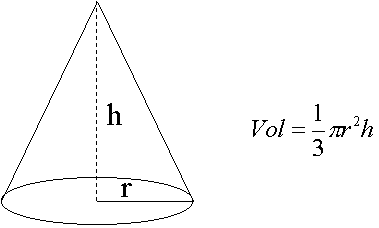

.
Objetivo:
- Escribir programas simples en
Python que impliquen el uso de operadores básicos y funciones predefinidas.

Modalidad:

Instrucciones:
Desarrolla el algoritmo y programa de los siguientes problemas.
-
Solicitar tres valores enteros al
usuario y realizar las operaciones aritméticas mostradas en la
parte inferior. El resultado de cada operación debe ser desplegado
en la pantalla (procura guardar el resultado de cada operación en un
variable auxiliar aux antes de desplegar el resultado de cada
operación). Guarda tu archivo como:
L_matricula.py
Variables utilizadas : a, b, c y aux.
Operaciones :
- a / b
- a % b
- a / b - c
- a / (b - c
)
Analiza los resultados de cada operación para los casos de
prueba.
Casos de prueba F(a,b,c):
-
Input: son los valores introducidos por el usuario. Si
se ingresan valores de 10, 5, 2; a = 10, b = 5 y c = 2.
-
Output: es el resultado de aplicar las cuatro operaciones
respectivamente a los valores de 10, 5 y 2, el resultado esperado para
cada caso sería: 2.000, 0, 0.000 y 3.333
Input:
10
5
2
Output:
2.000
0
0.000
3.333
-
Calcular el
volumen (v) de un cono recto. Los valores dados por el usuario son
el radio (r) y la altura (h). El resultado obtenido (volumen) debe
ser desplegado en la pantalla. Utiliza la constante math.pi
de la librería math. Guarda tu archivo como:
L_matricula.py

Casos de prueba:
- Input:
son los valores introducidos por el
usuario separados por un espacio . Si se ingresan valores para r = 10 y h =
2.
- Output:
es el resultado de la operación. para los inputs
10 y 2, el resultado esperado sería: 209.439
Input:
10
2
Output:
209.439
-
Calcular el valor de la hipotenusa. Solicite al usuario el valor
asignado a los catetos de un triángulo rectángulo. Para la solución
de este problema se sugiere que utilices el teorema de Pitágoras.
Guarda tu archivo como:
L_matricula.py

-
Determinar el volumen de un medio cilindro. El radio (r) y la
altura (h) son solicitadas al usuario. Utiliza la constante
math.pi de la librería math. Guarda tu archivo como:
L_matricula.py

-
Calcular y desplegar el peso
de una persona en todos los planetas del sistema solar. Guarda tu archivo como:
L_matricula.py.
Tu peso en otros planetas se calcula de acuerdo a sus
factores de conversión:
Venus:
0.91
Tierra: 1
Marte: 0.38
Júpiter: 2.54
Saturno: 1.08
Urano: 0.91
Neptuno: 1.19
Plutón: 0.06
La
luna 0.17

Recursos:
4.
Jerarquia de operadores
Funciones
predefinidas

Especificaciones de
entrega:
Entrega tus archivos en Canvas: .
|